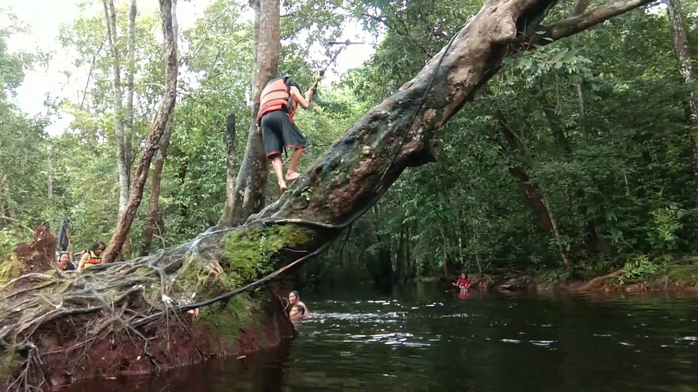
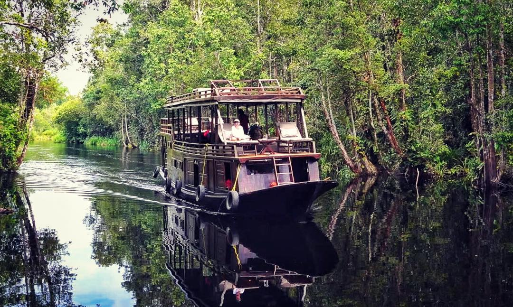
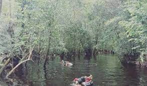
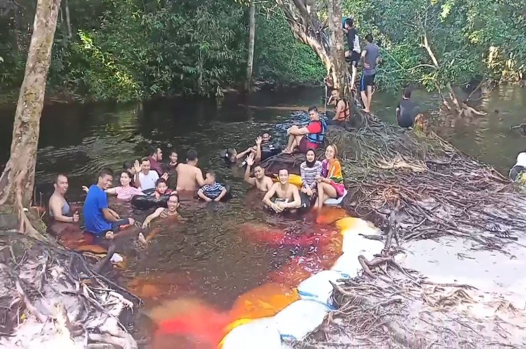
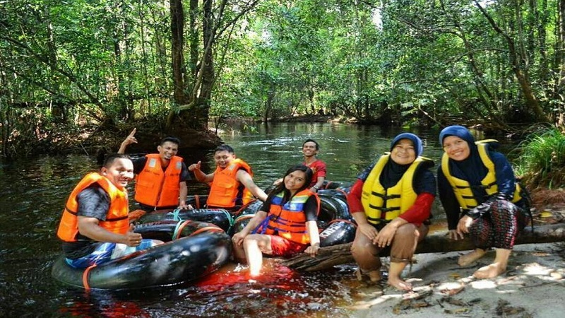

Taman Nasional Tanjung Puting
 |
Taman Nasional Tanjung Puting adalah sebuah taman nasional yang terletak di semenanjung barat daya provinsi Kalimantan Tengah. Tanjung Puting pada awalnya merupakan cagar alam dan suaka margasatwa yang ditetapkan oleh Pemerintah Hindia Belanda pada tahun 1937. Selanjutnya berdasarkan SK Menteri Kehutanan No. 687/Kpts-II/1996 tanggal 25 Oktober 1996, Tanjung Puting ditunjuk sebagai Taman Nasional dengan luas seluruhnya 415.040 ha. Secara geografis taman nasional ini terletak antara 2°35'-3°20' LS dan 111°50'-112°15' BT meliputi wilayah Kecamatan Kumai di Kotawaringin Barat dan kecamatan-kecamatan Hanau serta Seruyan Hilir di Kabupaten Seruyan. Taman Nasional Tanjung Puting dikelola oleh Balai Taman Nasional Tanjung Puting, salah satu Unit Pelaksana Teknis (UPT) Ditjen Perlindungan Hutan dan Konservasi Alam (PHKA) Kementerian Kehutanan. |


|
Bukit Batu
 |
Nama bukit batu ini terinspirasi dari nama seorang pahlawan nasional yang sekaligus merupakan putra Dayak. Tjilik Riwut adalah gubernur pertama di Provinsi Kalimantan Tengah. Sedangkah bukit batu ini merupakan tempat yang kerap dijadikan tempat bertapa oleh Tjilik Riwut. Akan tetapi, asal muasal batu di sini masih diterka-terka sebenarnya berasal dari mana, sebab lokasi bukit ini yang kurang memungkinkan. Jika dikaitkan dengan material gunung berapi, tidak akan menemukan titik temu, sebab lokasinya yang berjauhan dengan gunung berapi. Apabila diperkirakan dari bebatuan sungai, tidak juga menemukan titik temu. Hal ini dikarenakan tidak ada sungai yang letaknya berdekatan dengan bukit tersebut. Sedangkan berdasarkan legenda, batu yang ada di bukit tersebut merupakan batu dari kahyangan. Legenda tersebut berawal dari kisah bidadari yang diperisitri seorang manusia. Kemudian mereka memiliki seorang anak. Suatu ketika, bidadari bersama dengan anaknya pulang ke Kahyangan. Akan tetapi, ketika usai sang anak sudah dewasa, maka ia harus kembali lagi ke bumi. Saat penurunan anak tersebut terjadi halilintar yang bergemuruh disertai batu berukuran besar yang juga turun ke bumi. |


|
Susur Sungai
 |
Salah satu objek wisata yang menjadi andalan di Palangkaraya adalah Sungai Kahayan. Sungai ini adalah salah satu sungai terbesar yang ada di Pulau Borneo. Panjangnya sekitar 250 km dan banyak penduduk yang tinggal di sepanjang sungai ini. Salah satu wisata unik yang tergolong baru khas Palangkaraya yang sedang di gemari saat ini yaitu susur Sungai Kahayan. Anda bisa berwisata susur Sungai Kahayan ini berombongan. Wisata susur sungai ini bukanlah sembarang wisata yang bisa untuk Anda temukan di banyak tempat. Hal ini dikarenakan ketika Anda menjelajahi wisata ini maka Anda pun akan membelah suasana hutan gambut dan juga berlayar di atas sungai yang memiliki air yang jernih. Selama menyusuri sungai, Anda akan disuguhi dengan pemandangan khas hutan-hutan Kalimantan. Di sepanjang perjalanan Anda bisa melihat fauna khas Kalimantan yang tidak bisa ditemukan di tempat lain diantaranya orang utan, uwa-uwa, kera abu-abu dan bekantan. Selain itu, Anda juga bisa mampir ke tempat pemancingan atau situs sejarah dan habitat orang utan di Pulau Kaja. Rute wisata bisa dipilih sendiri sesuai dengan keinginan Anda. |


|
Hidden Gems
Kahui
|  |
Kahui merupakan obyek wisata baru yang kini populer dikalangan kaum Milenial Kota Palangka raya, setiap hari libur penuh kunjungan wisatawan remaja yang ingin memperoleh pengalaman menajubkan dalam menikmati suasana alam yang asri. Terletak di sisi kanan Poros jalan Utama Palangka Raya arah kabupaten Katingan, tepatnya di KM 38 Kecamatan Bukit Batu Tangkiling, Sei Gohong, Kalimantan Tengah, kian ramai dikunjungi masyarakat khususnya wisatawan dari Kota palangka Raya maupun dari luar palangka raya. Lokasi wisata ini sangat indah karena selain pepohonan yang masih rimbun juga terdapat aliran air yang masih jernih dengan udara yang sejuk membuat pengunjung merasa nyaman. Ini merupakan sebuah harta karun yang baru ditemukan oleh warga lokal, dengan harapan kiranya tempat wisata ini nanti bisa menjadi tempat wisata yang dikenal dimana-mana dengan membawa suasana asri pedalaman hutan kalimantan. |
|




|